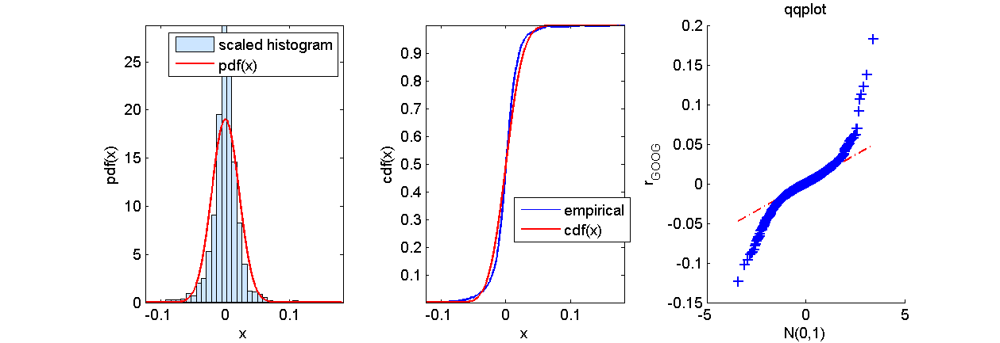
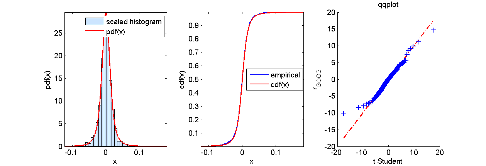

Contents
function demo_qqplot
demo_qqplot: quantile-quantile plot
Load the time series of closing prices for IBM and GOOGLE
data = load('closingPrices_IBM_GOOG_SI_2007_07_01_2013_06_30.txt');
S_GOOG = data(:,2);
r_GOOG = diff(log(S_GOOG));
Determine whether the returns follow a normal distribution
mu = mean(r_GOOG);
sigma = std(r_GOOG);
figure(1); clf
subplot(1,3,1);
pdf = @(x)normpdf(x,mu,sigma);
graphicalComparisonPdf(r_GOOG,pdf)
subplot(1,3,2);
cdf = @(x)normcdf(x,mu,sigma);
graphicalComparisonCdf(r_GOOG,cdf)
subplot(1,3,3);
qqplot(r_GOOG);
xlabel('N(0,1)');
ylabel('r_{GOOG}');
title('qqplot');
disp('Press any key to continue')
pause
Press any key to continue

Determine whether the returns follow a Student's t
mu = 7.5905e-04
sigma = 0.012315
nu = 2.7552
mu =
7.5905e-04
sigma =
0.0123
nu =
2.7552
Compare with t model
figure(2); clf
subplot(1,3,1);
pdf = @(x)(tpdf((x-mu)/sigma,nu)/sigma);
graphicalComparisonPdf(r_GOOG,pdf)
subplot(1,3,2);
cdf = @(x)(tcdf((x-mu)/sigma,nu));
graphicalComparisonCdf(r_GOOG,cdf)
subplot(1,3,3);
try
qqplot((r_GOOG-mu)/sigma,'t',nu);
catch
tPD = ProbDistUnivParam('tlocationscale', [0,1,nu]);
qqplot((r_GOOG-mu)/sigma,tPD);
end
xlabel('t Student');
ylabel('r_{GOOG}');
title('qqplot');
